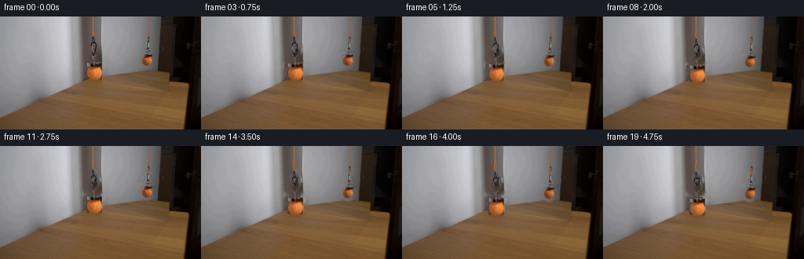
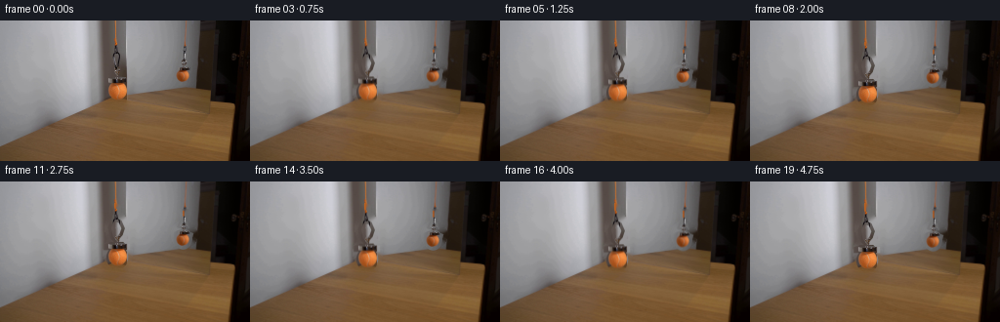
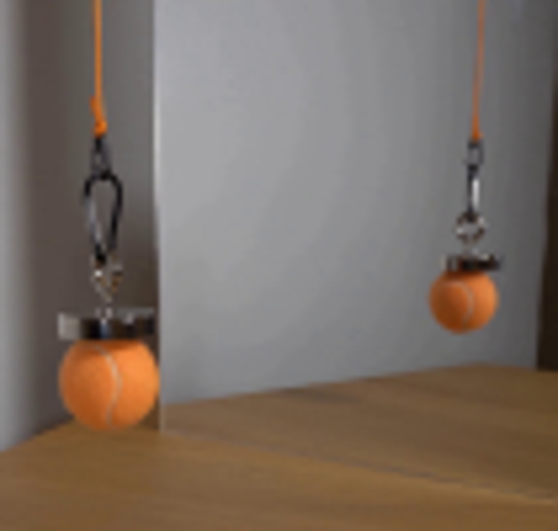
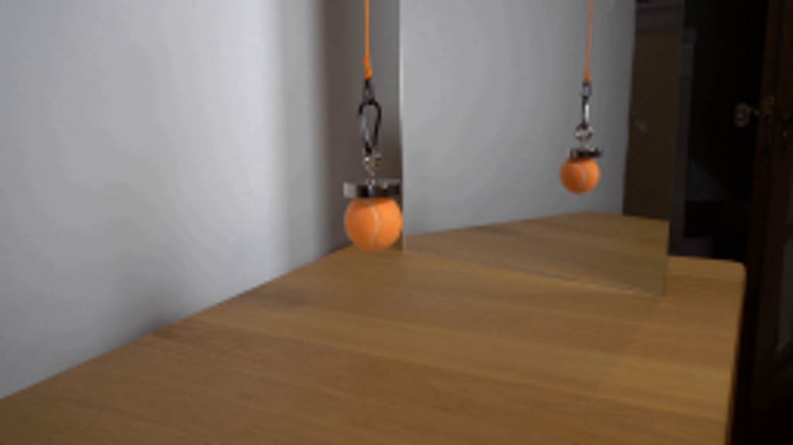
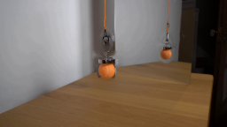
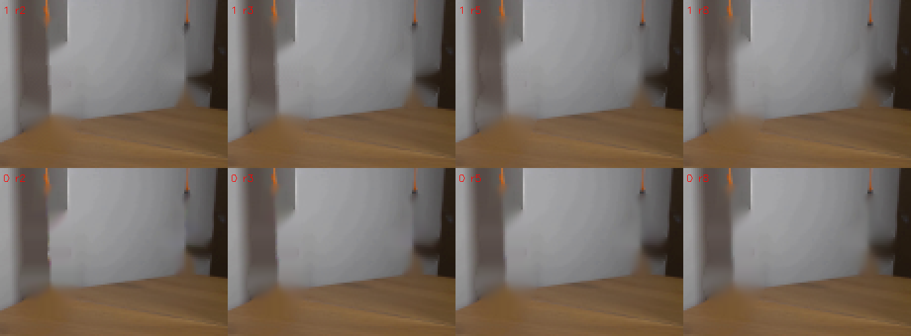
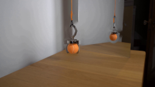
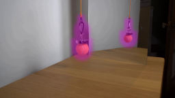
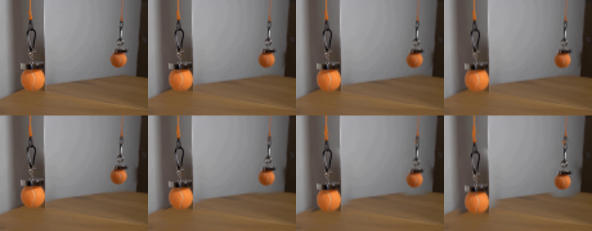

CODING AGENTS AS PIXEL WORLD MODELS
traex/GPT-5.6-Sol · 0115
点击播放 · 原生 RGB 像素
逐轮保存的候选
回放视频、检查图与代码变化。
每份候选均可单独播放。实际图片检查记录在下方工具轨迹中。
候选 01播放与检查图
点击播放 · 原生 RGB 像素

展开代码变化
--- 上一保存版本
+++ 本次保存版本
@@ -0,0 +1,118 @@
+from pathlib import Path
+import numpy as np
+import cv2
+from PIL import Image
+import artifact_io
+
+CASE_DIR = Path(__file__).resolve().parent
+
+
+def soft_mask_actual(h=144, w=256, scale=4):
+ """Hand-traced alpha for the real, nearer hanging assembly."""
+ m = np.zeros((h*scale, w*scale), np.uint8)
+ S=lambda p: tuple(int(round(v*scale)) for v in p)
+ # ball and magnet
+ cv2.ellipse(m, S((120.0,73.0)), S((11.1,11.9)), 0, 0, 360, 255, -1, cv2.LINE_AA)
+ cv2.fillPoly(m, [np.array([S(p) for p in [(106,59),(111,58),(112,57),(126,57),(128,59),(133,59),(133,65),(106,65)]],np.int32)], 255, cv2.LINE_AA)
+ # steel swivel, clip, and dark carabiner
+ cv2.line(m,S((120,59)),S((119,53)),255,3*scale,cv2.LINE_AA)
+ cv2.line(m,S((119,55)),S((124,49)),255,3*scale,cv2.LINE_AA)
+ cv2.line(m,S((124,49)),S((126,43)),255,3*scale,cv2.LINE_AA)
+ cv2.line(m,S((126,43)),S((123,36)),255,3*scale,cv2.LINE_AA)
+ cv2.line(m,S((123,36)),S((116,33)),255,3*scale,cv2.LINE_AA)
+ cv2.line(m,S((116,33)),S((112,42)),255,3*scale,cv2.LINE_AA)
+ cv2.line(m,S((112,42)),S((114,52)),255,3*scale,cv2.LINE_AA)
+ cv2.line(m,S((114,52)),S((119,57)),255,3*scale,cv2.LINE_AA)
+ cv2.circle(m,S((119,55)),3*scale,255,-1,cv2.LINE_AA)
+ # orange knot and the very bottom of the cord move with the assembly
+ cv2.line(m,S((118,24)),S((118,35)),255,3*scale,cv2.LINE_AA)
+ cv2.circle(m,S((118,31)),3*scale,255,-1,cv2.LINE_AA)
+ m=cv2.resize(m,(w,h),interpolation=cv2.INTER_AREA)
+ return m.astype(np.float32)/255.0
+
+
+def soft_mask_reflection(h=144, w=256, scale=4):
+ """Hand-traced alpha for the smaller image in the mirror."""
+ m=np.zeros((h*scale,w*scale),np.uint8)
+ S=lambda p: tuple(int(round(v*scale)) for v in p)
+ cv2.ellipse(m,S((187.5,56.0)),S((9.3,10.5)),0,0,360,255,-1,cv2.LINE_AA)
+ cv2.fillPoly(m,[np.array([S(p) for p in [(178,49),(182,47),(193,47),(195,49),(198,50),(197,54),(178,54)]],np.int32)],255,cv2.LINE_AA)
+ cv2.line(m,S((188,49)),S((188,43)),255,3*scale,cv2.LINE_AA)
+ cv2.line(m,S((188,45)),S((182,43)),255,2*scale,cv2.LINE_AA)
+ cv2.line(m,S((182,43)),S((186,36)),255,2*scale,cv2.LINE_AA)
+ cv2.line(m,S((186,36)),S((191,39)),255,2*scale,cv2.LINE_AA)
+ cv2.line(m,S((191,39)),S((193,44)),255,2*scale,cv2.LINE_AA)
+ cv2.line(m,S((188,34)),S((188,41)),255,3*scale,cv2.LINE_AA)
+ cv2.circle(m,S((188,38)),2*scale,255,-1,cv2.LINE_AA)
+ m=cv2.resize(m,(w,h),interpolation=cv2.INTER_AREA)
+ return m.astype(np.float32)/255.0
+
+
+def translate(layer, dx, dy, interpolation=cv2.INTER_LINEAR):
+ h,w=layer.shape[:2]
+ M=np.float32([[1,0,dx],[0,1,dy]])
+ return cv2.warpAffine(layer,M,(w,h),flags=interpolation,borderMode=cv2.BORDER_CONSTANT,borderValue=0)
+
+
+def make_background(src, masks):
+ # Inpaint only the original assembly footprints. A narrow dilation includes
+ # their antialiased fringe while leaving the mirror and desk geometry intact.
+ hard=np.zeros(src.shape[:2],np.uint8)
+ for m in masks:
+ hard=np.maximum(hard,(m>0.035).astype(np.uint8)*255)
+ hard=cv2.dilate(hard,np.ones((3,3),np.uint8),iterations=1)
+ bgr=cv2.cvtColor(src,cv2.COLOR_RGB2BGR)
+ bg=cv2.inpaint(bgr,hard,3.0,cv2.INPAINT_TELEA)
+ return cv2.cvtColor(bg,cv2.COLOR_BGR2RGB)
+
+
+def draw_extended_cords(frame, da, dr):
+ # Draw on a 4x canvas for the same soft photographic antialiasing as source.
+ s=4
+ hi=cv2.resize(frame,None,fx=s,fy=s,interpolation=cv2.INTER_CUBIC)
+ # real orange cord, in front of the left side of the mirror
+ xa=118*s
+ cv2.line(hi,(xa,22*s),(xa,int(round((27+da)*s))),(82,44,19),3,cv2.LINE_AA)
+ cv2.line(hi,(xa-1,22*s),(xa-1,int(round((27+da)*s))),(190,91,25),3,cv2.LINE_AA)
+ cv2.line(hi,(xa,22*s),(xa,int(round((27+da)*s))),(222,116,32),2,cv2.LINE_AA)
+ # dimmer reflected cord
+ xr=188*s
+ cv2.line(hi,(xr,30*s),(xr,int(round((36+dr)*s))),(80,52,35),3,cv2.LINE_AA)
+ cv2.line(hi,(xr-1,30*s),(xr-1,int(round((36+dr)*s))),(175,89,32),3,cv2.LINE_AA)
+ return cv2.resize(hi,(frame.shape[1],frame.shape[0]),interpolation=cv2.INTER_AREA)
+
+
+def composite(frame, source, mask, dx, dy):
+ premul=source.astype(np.float32)*mask[...,None]
+ pm=translate(premul,dx,dy)
+ a=translate(mask,dx,dy)[...,None]
+ return np.clip(frame.astype(np.float32)*(1-a)+pm,0,255).astype(np.uint8)
+
+
+def generate():
+ src=np.array(Image.open(CASE_DIR/'first_frame.png').convert('RGB'),dtype=np.uint8)
+ assert src.shape==(144,256,3)
+ ma=soft_mask_actual(); mr=soft_mask_reflection()
+ bg=make_background(src,[ma,mr])
+ frames=[]
+ for i in range(20):
+ if i==0:
+ frames.append(src.copy())
+ continue
+ t=i/19.0
+ # Smooth real-time lowering: gentle start and stop, no swing or camera motion.
+ ease=t*t*(3.0-2.0*t)
+ da=8.0*ease
+ dr=4.8*ease
+ fr=draw_extended_cords(bg.copy(),da,dr)
+ # mirror image is behind the mirror surface; direct object is composited last
+ fr=composite(fr,src,mr,0.0,dr)
+ fr=composite(fr,src,ma,0.0,da)
+ frames.append(fr)
+ frames=np.stack(frames).astype(np.uint8)
+ assert np.array_equal(frames[0],src)
+ artifact_io.save(frames,CASE_DIR)
+ return frames
+
+if __name__=='__main__':
+ generate()
候选 02播放与检查图
点击播放 · 原生 RGB 像素
展开代码变化
--- 上一保存版本
+++ 本次保存版本
@@ -55,12 +55,15 @@
def make_background(src, masks):
- # Inpaint only the original assembly footprints. A narrow dilation includes
- # their antialiased fringe while leaving the mirror and desk geometry intact.
+ # Inpaint the original assembly footprints. These deliberately broad
+ # silhouettes also cover the soft shadow/defocus fringe around the metal,
+ # avoiding a stationary "ghost" as the object descends.
hard=np.zeros(src.shape[:2],np.uint8)
- for m in masks:
- hard=np.maximum(hard,(m>0.035).astype(np.uint8)*255)
- hard=cv2.dilate(hard,np.ones((3,3),np.uint8),iterations=1)
+ cv2.rectangle(hard,(113,23),(123,37),255,-1)
+ cv2.ellipse(hard,(119,47),(12,17),0,0,360,255,-1)
+ cv2.ellipse(hard,(120,72),(15,17),0,0,360,255,-1)
+ cv2.rectangle(hard,(184,28),(192,46),255,-1)
+ cv2.ellipse(hard,(188,54),(13,15),0,0,360,255,-1)
bgr=cv2.cvtColor(src,cv2.COLOR_RGB2BGR)
bg=cv2.inpaint(bgr,hard,3.0,cv2.INPAINT_TELEA)
return cv2.cvtColor(bg,cv2.COLOR_BGR2RGB)
候选 03播放与检查图

候选 04播放与检查图
点击播放 · 原生 RGB 像素

展开代码变化
--- 上一保存版本
+++ 本次保存版本
@@ -8,25 +8,16 @@
def soft_mask_actual(h=144, w=256, scale=4):
- """Hand-traced alpha for the real, nearer hanging assembly."""
+ """Soft photographic cutout for the real, nearer hanging assembly."""
m = np.zeros((h*scale, w*scale), np.uint8)
S=lambda p: tuple(int(round(v*scale)) for v in p)
- # ball and magnet
- cv2.ellipse(m, S((120.0,73.0)), S((11.1,11.9)), 0, 0, 360, 255, -1, cv2.LINE_AA)
- cv2.fillPoly(m, [np.array([S(p) for p in [(106,59),(111,58),(112,57),(126,57),(128,59),(133,59),(133,65),(106,65)]],np.int32)], 255, cv2.LINE_AA)
- # steel swivel, clip, and dark carabiner
- cv2.line(m,S((120,59)),S((119,53)),255,3*scale,cv2.LINE_AA)
- cv2.line(m,S((119,55)),S((124,49)),255,3*scale,cv2.LINE_AA)
- cv2.line(m,S((124,49)),S((126,43)),255,3*scale,cv2.LINE_AA)
- cv2.line(m,S((126,43)),S((123,36)),255,3*scale,cv2.LINE_AA)
- cv2.line(m,S((123,36)),S((116,33)),255,3*scale,cv2.LINE_AA)
- cv2.line(m,S((116,33)),S((112,42)),255,3*scale,cv2.LINE_AA)
- cv2.line(m,S((112,42)),S((114,52)),255,3*scale,cv2.LINE_AA)
- cv2.line(m,S((114,52)),S((119,57)),255,3*scale,cv2.LINE_AA)
- cv2.circle(m,S((119,55)),3*scale,255,-1,cv2.LINE_AA)
- # orange knot and the very bottom of the cord move with the assembly
- cv2.line(m,S((118,24)),S((118,35)),255,3*scale,cv2.LINE_AA)
- cv2.circle(m,S((118,31)),3*scale,255,-1,cv2.LINE_AA)
+ # Carry a slim halo of the native photograph with the cutout. It retains
+ # the naturally blurred metal and ball edges without trying to redraw them.
+ cv2.rectangle(m,S((113,22)),S((124,59)),255,-1)
+ cv2.ellipse(m,S((120,46)),S((12,17)),0,0,360,255,-1,cv2.LINE_AA)
+ cv2.rectangle(m,S((104,56)),S((135,68)),255,-1)
+ cv2.ellipse(m,S((120,73)),S((15,16)),0,0,360,255,-1,cv2.LINE_AA)
+ m=cv2.GaussianBlur(m,(0,0),2.3*scale)
m=cv2.resize(m,(w,h),interpolation=cv2.INTER_AREA)
return m.astype(np.float32)/255.0
@@ -35,15 +26,10 @@
"""Hand-traced alpha for the smaller image in the mirror."""
m=np.zeros((h*scale,w*scale),np.uint8)
S=lambda p: tuple(int(round(v*scale)) for v in p)
- cv2.ellipse(m,S((187.5,56.0)),S((9.3,10.5)),0,0,360,255,-1,cv2.LINE_AA)
- cv2.fillPoly(m,[np.array([S(p) for p in [(178,49),(182,47),(193,47),(195,49),(198,50),(197,54),(178,54)]],np.int32)],255,cv2.LINE_AA)
- cv2.line(m,S((188,49)),S((188,43)),255,3*scale,cv2.LINE_AA)
- cv2.line(m,S((188,45)),S((182,43)),255,2*scale,cv2.LINE_AA)
- cv2.line(m,S((182,43)),S((186,36)),255,2*scale,cv2.LINE_AA)
- cv2.line(m,S((186,36)),S((191,39)),255,2*scale,cv2.LINE_AA)
- cv2.line(m,S((191,39)),S((193,44)),255,2*scale,cv2.LINE_AA)
- cv2.line(m,S((188,34)),S((188,41)),255,3*scale,cv2.LINE_AA)
- cv2.circle(m,S((188,38)),2*scale,255,-1,cv2.LINE_AA)
+ cv2.rectangle(m,S((182,27)),S((194,50)),255,-1)
+ cv2.rectangle(m,S((175,45)),S((200,56)),255,-1)
+ cv2.ellipse(m,S((188,56)),S((13,14)),0,0,360,255,-1,cv2.LINE_AA)
+ m=cv2.GaussianBlur(m,(0,0),2.0*scale)
m=cv2.resize(m,(w,h),interpolation=cv2.INTER_AREA)
return m.astype(np.float32)/255.0
@@ -105,8 +91,8 @@
t=i/19.0
# Smooth real-time lowering: gentle start and stop, no swing or camera motion.
ease=t*t*(3.0-2.0*t)
- da=8.0*ease
- dr=4.8*ease
+ da=5.5*ease
+ dr=5.0*ease
fr=draw_extended_cords(bg.copy(),da,dr)
# mirror image is behind the mirror surface; direct object is composited last
fr=composite(fr,src,mr,0.0,dr)
候选 05播放与检查图
可观测工具轨迹
实际执行的命令与返回图片。
命令 1exit 0
/bin/bash -lc "cat prompt.txt && printf '\\n---RULES---\\n' && cat GENERATION_RULES.md"
命令 2exit 0
/bin/bash -lc "find . -maxdepth 2 -type f -printf '%p %s bytes\\n' | sort"
命令 3exit 0
/bin/bash -lc "command -v ffmpeg; command -v python3; python3 - <<'PY' mods=['cv2','PIL','numpy','imageio','torch'] for m in mods: try: x=__import__(m); print(m,'OK',getattr(x,'__version__','')) except Exception as e: print(m,'NO',e) PY"
命令 4exit 0
/bin/bash -lc "python3 - <<'PY'
from PIL import Image
im=Image.open('first_frame.png')
im.crop((100,0,205,100)).resize((630,600)).save('.tmp/crop.png')
PY"命令 5exit 0
/bin/bash -lc "sed -n '1,240p' artifact_io.py"
命令 6exit 0
/bin/bash -lc "python3 - <<'PY'
from PIL import Image
Image.open('first_frame.png').resize((1024,576)).save('.tmp/full4.png')
PY"命令 7exit 0
/bin/bash -lc "cat > generate.py <<'PY'
from pathlib import Path
import numpy as np
import cv2
from PIL import Image
import artifact_io
CASE_DIR = Path(__file__).resolve().parent
def soft_mask_actual(h=144, w=256, scale=4):
\"\"\"Hand-traced alpha for the real, nearer hanging assembly.\"\"\"
m = np.zeros((h*scale, w*scale), np.uint8)
S=lambda p: tuple(int(round(v*scale)) for v in p)
# ball and magnet
cv2.ellipse(m, S((120.0,73.0)), S((11.1,11.9)), 0, 0, 360, 255, -1, cv2.LINE_AA)
cv2.fillPoly(m, [np.array([S(p) for p in [(106,59),(111,58),(112,57),(126,57),(128,59),(133,59),(133,65),(106,65)]],np.int32)], 255, cv2.LINE_AA)
# steel swivel, clip, and dark carabiner
cv2.line(m,S((120,59)),S((119,53)),255,3*scale,cv2.LINE_AA)
cv2.line(m,S((119,55)),S((124,49)),255,3*scale,cv2.LINE_AA)
cv2.line(m,S((124,49)),S((126,43)),255,3*scale,cv2.LINE_AA)
cv2.line(m,S((126,43)),S((123,36)),255,3*scale,cv2.LINE_AA)
cv2.line(m,S((123,36)),S((116,33)),255,3*scale,cv2.LINE_AA)
cv2.line(m,S((116,33)),S((112,42)),255,3*scale,cv2.LINE_AA)
cv2.line(m,S((112,42)),S((114,52)),255,3*scale,cv2.LINE_AA)
cv2.line(m,S((114,52)),S((119,57)),255,3*scale,cv2.LINE_AA)
cv2.circle(m,S((119,55)),3*scale,255,-1,cv2.LINE_AA)
# orange knot and the very bottom of the cord move with the assembly
cv2.line(m,S((118,24)),S((118,35)),255,3*scale,cv2.LINE_AA)
cv2.circle(m,S((118,31)),3*scale,255,-1,cv2.LINE_AA)
m=cv2.resize(m,(w,h),interpolation=cv2.INTER_AREA)
return m.astype(np.float32)/255.0
def soft_mask_reflection(h=144, w=256, scale=4):
\"\"\"Hand-traced alpha for the smaller image in the mirror.\"\"\"
m=np.zeros((h*scale,w*scale),np.uint8)
S=lambda p: tuple(int(round(v*scale)) for v in p)
cv2.ellipse(m,S((187.5,56.0)),S((9.3,10.5)),0,0,360,255,-1,cv2.LINE_AA)
cv2.fillPoly(m,[np.array([S(p) for p in [(178,49),(182,47),(193,47),(195,49),(198,50),(197,54),(178,54)]],np.int32)],255,cv2.LINE_AA)
cv2.line(m,S((188,49)),S((188,43)),255,3*scale,cv2.LINE_AA)
cv2.line(m,S((188,45)),S((182,43)),255,2*scale,cv2.LINE_AA)
cv2.line(m,S((182,43)),S((186,36)),255,2*scale,cv2.LINE_AA)
cv2.line(m,S((186,36)),S((191,39)),255,2*scale,cv2.LINE_AA)
cv2.line(m,S((191,39)),S((193,44)),255,2*scale,cv2.LINE_AA)
cv2.line(m,S((188,34)),S((188,41)),255,3*scale,cv2.LINE_AA)
cv2.circle(m,S((188,38)),2*scale,255,-1,cv2.LINE_AA)
m=cv2.resize(m,(w,h),interpolation=cv2.INTER_AREA)
return m.astype(np.float32)/255.0
def translate(layer, dx, dy, interpolation=cv2.INTER_LINEAR):
h,w=layer.shape[:2]
M=np.float32([[1,0,dx],[0,1,dy]])
return cv2.warpAffine(layer,M,(w,h),flags=interpolation,borderMode=cv2.BORDER_CONSTANT,borderValue=0)
def make_background(src, masks):
# Inpaint only the original assembly footprints. A narrow dilation includes
# their antialiased fringe while leaving the mirror and desk geometry intact.
hard=np.zeros(src.shape[:2],np.uint8)
for m in masks:
hard=np.maximum(hard,(m>0.035).astype(np.uint8)*255)
hard=cv2.dilate(hard,np.ones((3,3),np.uint8),iterations=1)
bgr=cv2.cvtColor(src,cv2.COLOR_RGB2BGR)
bg=cv2.inpaint(bgr,hard,3.0,cv2.INPAINT_TELEA)
return cv2.cvtColor(bg,cv2.COLOR_BGR2RGB)
def draw_extended_cords(frame, da, dr):
# Draw on a 4x canvas for the same soft photographic antialiasing as source.
s=4
hi=cv2.resize(frame,None,fx=s,fy=s,interpolation=cv2.INTER_CUBIC)
# real orange cord, in front of the left side of the mirror
xa=118*s
cv2.line(hi,(xa,22*s),(xa,int(round((27+da)*s))),(82,44,19),3,cv2.LINE_AA)
cv2.line(hi,(xa-1,22*s),(xa-1,int(round((27+da)*s))),(190,91,25),3,cv2.LINE_AA)
cv2.line(hi,(xa,22*s),(xa,int(round((27+da)*s))),(222,116,32),2,cv2.LINE_AA)
# dimmer reflected cord
xr=188*s
cv2.line(hi,(xr,30*s),(xr,int(round((36+dr)*s))),(80,52,35),3,cv2.LINE_AA)
cv2.line(hi,(xr-1,30*s),(xr-1,int(round((36+dr)*s))),(175,89,32),3,cv2.LINE_AA)
return cv2.resize(hi,(frame.shape[1],frame.shape[0]),interpolation=cv2.INTER_AREA)
def composite(frame, source, mask, dx, dy):
premul=source.astype(np.float32)*mask[...,None]
pm=translate(premul,dx,dy)
a=translate(mask,dx,dy)[...,None]
return np.clip(frame.astype(np.float32)*(1-a)+pm,0,255).astype(np.uint8)
def generate():
src=np.array(Image.open(CASE_DIR/'first_frame.png').convert('RGB'),dtype=np.uint8)
assert src.shape==(144,256,3)
ma=soft_mask_actual(); mr=soft_mask_reflection()
bg=make_background(src,[ma,mr])
frames=[]
for i in range(20):
if i==0:
frames.append(src.copy())
continue
t=i/19.0
# Smooth real-time lowering: gentle start and stop, no swing or camera motion.
ease=t*t*(3.0-2.0*t)
da=8.0*ease
dr=4.8*ease
fr=draw_extended_cords(bg.copy(),da,dr)
# mirror image is behind the mirror surface; direct object is composited last
fr=composite(fr,src,mr,0.0,dr)
fr=composite(fr,src,ma,0.0,da)
frames.append(fr)
frames=np.stack(frames).astype(np.uint8)
assert np.array_equal(frames[0],src)
artifact_io.save(frames,CASE_DIR)
return frames
if __name__=='__main__':
generate()
PY
python3 generate.py
python3 - <<'PY'
import imageio.v2 as iio
from pathlib import Path
ims=[iio.imread(f'frames/{i:02d}.png') for i in range(20)]
iio.mimsave('.tmp/preview.gif',ims,duration=0.25,loop=0)
PY"命令 8exit 0
/bin/bash -lc "python3 - <<'PY'
import cv2,numpy as np
from PIL import Image,ImageDraw
src=cv2.imread('first_frame.png')
variants=[]
for method in [cv2.INPAINT_TELEA,cv2.INPAINT_NS]:
for rad in [2,3,5,8]:
m=np.zeros(src.shape[:2],np.uint8)
# broad silhouette polygons
cv2.rectangle(m,(113,23),(123,36),255,-1)
cv2.ellipse(m,(119,47),(12,17),0,0,360,255,-1)
cv2.ellipse(m,(120,72),(15,17),0,0,360,255,-1)
cv2.rectangle(m,(184,28),(192,45),255,-1)
cv2.ellipse(m,(188,54),(13,15),0,0,360,255,-1)
out=cv2.inpaint(src,m,rad,method)
crop=out[15:100,95:210]
crop=cv2.resize(crop,(345,255),interpolation=cv2.INTER_NEAREST)
cv2.putText(crop,f'{method} r{rad}',(4,20),cv2.FONT_HERSHEY_SIMPLEX,.5,(0,0,255),1)
variants.append(crop)
sheet=np.concatenate([np.concatenate(variants[:4],axis=1),np.concatenate(variants[4:],axis=1)],axis=0)
cv2.imwrite('.tmp/inpaint_variants.png',sheet)
PY"命令 9exit 0
/bin/bash -lc "python3 generate.py && python3 - <<'PY'
import imageio.v2 as iio
ims=[iio.imread(f'frames/{i:02d}.png') for i in range(20)]
iio.mimsave('.tmp/preview2.gif',ims,duration=.25,loop=0)
PY"命令 10exit 0
/bin/bash -lc "python3 - <<'PY'
from PIL import Image
import numpy as np
im=np.array(Image.open('first_frame.png'))
for y in range(20,90):
print(y, tuple(im[y,105]),tuple(im[y,110]),tuple(im[y,130]),tuple(im[y,135]))
PY"命令 11exit 0
/bin/bash -lc "python3 - <<'PY'
from PIL import Image
import numpy as np
im=np.array(Image.open('first_frame.png'))
# x around object print rgb classifications positions y 25-70
for y in range(24,66):
s=''
for x in range(106,134):
r,g,b=im[y,x]
if max(r,g,b)<50:c='K'
elif r>g*1.35 and r>b*1.5:c='O'
elif max(r,g,b)-min(r,g,b)<10 and max(r,g,b)>130:c='L'
elif max(r,g,b)<100:c='d'
elif max(r,g,b)<140:c='m'
else:c='.'
s+=c
print(f'{y:02}',s)
PY"命令 12exit 0
/bin/bash -lc "python3 generate.py && python3 - <<'PY'
import imageio.v2 as iio
ims=[iio.imread(f'frames/{i:02d}.png') for i in range(20)]
iio.mimsave('.tmp/preview3.gif',ims,duration=.25,loop=0)
PY"命令 13exit 0
/bin/bash -lc "python3 - <<'PY'
import numpy as np
from PIL import Image
from generate import soft_mask_actual,soft_mask_reflection
src=np.array(Image.open('first_frame.png'))
ma=soft_mask_actual(); mr=soft_mask_reflection()
# visual overlay masks
out=src.copy(); out=(out*(1-.35*np.maximum(ma,mr)[...,None])+np.array([255,0,255])*.35*np.maximum(ma,mr)[...,None]).astype('uint8')
Image.fromarray(out).save('.tmp/masks.png')
for name,m in [('a',ma),('r',mr)]:
ys,xs=np.where(m>.02);print(name,(xs.min(),ys.min(),xs.max(),ys.max()),'levels',[(q,float(np.quantile(m[m>0],q))) for q in (.1,.5,.9)])
PY"命令 14exit 0
/bin/bash -lc "python3 - <<'PY'
from PIL import Image
import numpy as np
ims=[]
for i in [0,1,2,3,5,8,12,19]:
im=Image.open(f'frames/{i:02d}.png').crop((95,10,210,100)).resize((460,360))
ims.append(im)
s=Image.new('RGB',(460*4,360*2))
for j,im in enumerate(ims):s.paste(im,((j%4)*460,(j//4)*360))
s.save('.tmp/objseq.png')
PY"命令 15exit 0
/bin/bash -lc "python3 - <<'PY'
from pathlib import Path
import hashlib, numpy as np
from PIL import Image
src=np.array(Image.open('first_frame.png').convert('RGB'))
frames=np.stack([np.array(Image.open(f'frames/{i:02d}.png').convert('RGB')) for i in range(20)])
print('shape/dtype:',frames.shape,frames.dtype)
print('frame00 exact:',np.array_equal(src,frames[0]))
print('movement MAE 00->19:',np.abs(frames[19].astype(int)-frames[0].astype(int)).mean())
print('outputs:',[(p.name,p.stat().st_size) for p in map(Path,['pixels.npz','index.html','inspection.png','generate.py'])])
assert frames.shape==(20,144,256,3) and frames.dtype==np.uint8 and np.array_equal(src,frames[0])
assert all(np.any(frames[i]"'!=frames[i-1]) for i in range(1,20))
PY'视觉工具实际返回图片 1

视觉工具实际返回图片 2

视觉工具实际返回图片 3

视觉工具实际返回图片 4

视觉工具实际返回图片 5

视觉工具实际返回图片 6

视觉工具实际返回图片 7

视觉工具实际返回图片 8

视觉工具实际返回图片 9

视觉工具实际返回图片 10
视觉工具实际返回图片 11

视觉工具实际返回图片 12

保存候选 5 份；完成命令 15 次；可验证图片返回 12 张。原始 API 响应与完整日志保留在本地。